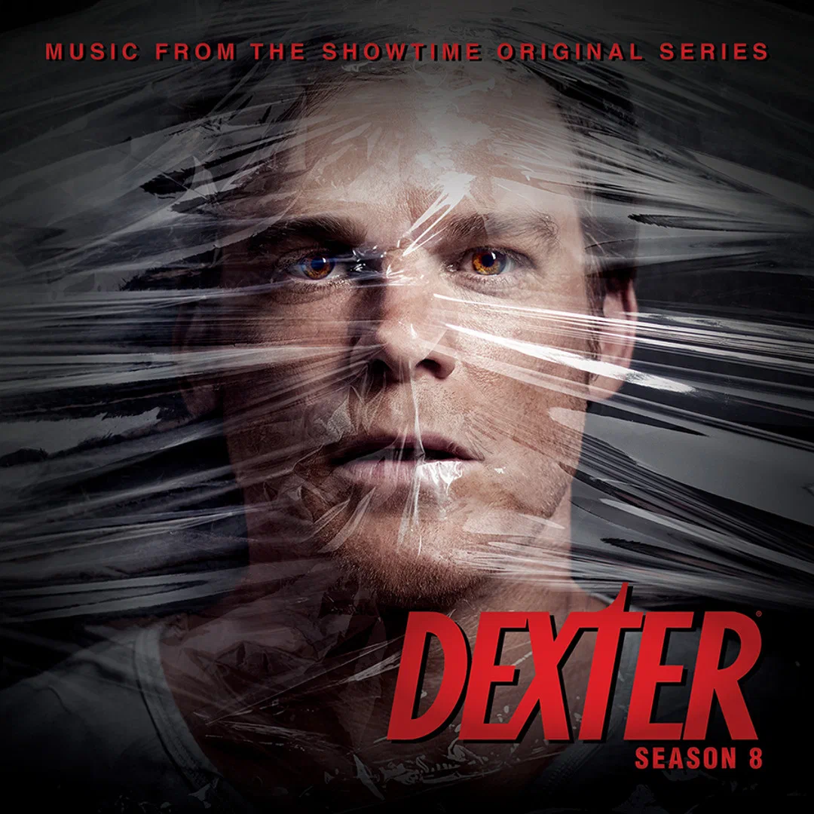

Бокс-офис
| Страна | Премьера |
|---|---|
| США | 1 октября 2006 |
| РФ | 3 ноября 2008 |
Описание
Я — Декстер. Декстер Морган. Я работаю судмедэкспертом в полиции Майами. Я не понимаю любви, мне безразличен секс, и у меня нет чувств. А еще я серийный убийца. Мой отец был полицейским и прекрасно обучил меня прятать улики. Обычным гражданам не стоит меня бояться, я убиваю только преступников, подонков, до которых почему-либо не смогла или не захотела добраться полиция. Я убиваю их, аккуратно распиливаю на части и избавляюсь от трупов. Убийство для меня — творческий акт, искусство. Но однажды… В Майами появляется некто, равный мне. Даже превзошедший меня. Сумевший меня заинтересовать. Предложивший мне своего рода товарищеское состязание. Кто этот загадочный и неуловимый «икс»?
Основная информация
Год выпуска:2006
Режисеры:Джон Дал, Стив Шилл, Кит Гордон
Жанр:триллер, драма, криминал, детектив
Количество серий:12
Время серии:55 мин.
Главные актёры
- Майк С Холл - Декстер Морган
- Дженифер Карпентер - Дебра Морган
- Дэвид Зайас - Анджел Батиста
- Джеймс Римар - Гарии Морган
- Эрик Кинг - Джеймс Докс
- Луна Лорен Велес - Мария Лагуэрта
Почему стоит смотреть:
Постер сериала:
Дополнительная информация
Известная цитата
Все хорошо, жизнь не должна быть идеальной. Она должна просто быть.
— Декстер